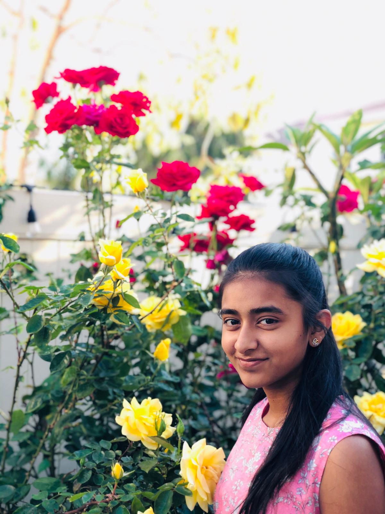
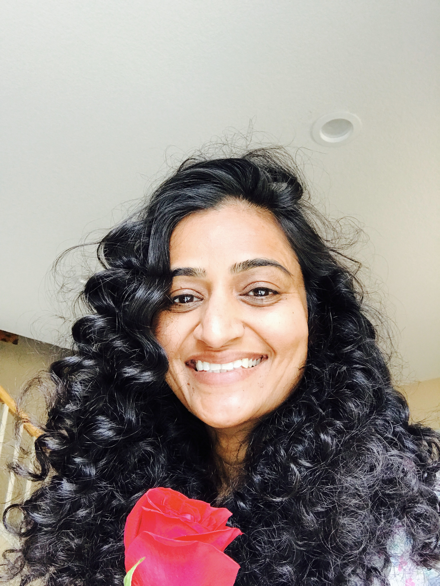

Happy Valentine's day!
On the top, you will see the menus. I made this website just for my family. Enjoy!
Teertha
Teertha is my sister, she can be annoying,mad, weird, but she can also be cool too. She loves me a lot, and she might not see it, but I love her the same way. I might get mad for no reason, be annoying, but I still love her. My mumma and papa might think that we dont get along ,but we only dont get along if we are mad at something. Otherwise, we good.

Papa
Papa is my dad, he can get mad easly, goof around too much, be very strict, and be dumb, but he loves us a lot. He gives me kisses and huggies in the morning, and he does brush racing with me. It is a race to see who can get ready on time. although he is srict, anything he does is never for himself, it is for our future, our life, our childhood. He is the most caring person in the family. He also takes us hiking in the vacations, we go as far we can go and then when we get back home, we always have maggie.
Mumma
My Mumma is my mom. Although she can be talkive, strict, and the person who wakes me up by screaming, she is still my Mumma, like my papa, she does all the classes for our future, make us do all the work for our life, and to get us in good grades and classes. She is also the best chef ever! I love all of her foods, and when I do not, I just dont like the ingredients, but there was this one time that she and my papa gave me and Teertha expired milk, but that is a story for another time.

Whole Family
My whole family is amazing, their kind, sweet, caring, weird, cool, and other words that dont even extist.I have no words on what to call my family. Their a kind of family no one deserves. They sometimes get mad, is strict, annoying, and a goofball, but I dont care, their my family no matter what. I wish every family a happy Valentines day!